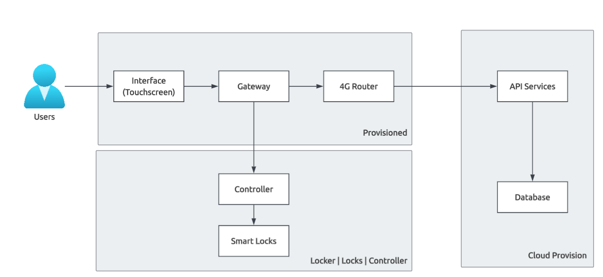

Staff scans equipment barcodes, selects target locker compartment (S/M/L), deposits items, and closes the door. System generates an encrypted pickup token.
Borrower presents dynamic single-use QR or enters numeric OTP at the locker kiosk touch screen. Designated compartment door releases instantly.
Magnetic reed switches and optical compartment sensors confirm door open/close cycles and asset withdrawal, logging exact timestamps to the cloud audit engine.
Unclaimed items trigger auto-expiry alerts after configurable time limits. Physical master keys and battery backup ensure uninterrupted access during campus power or network drops.